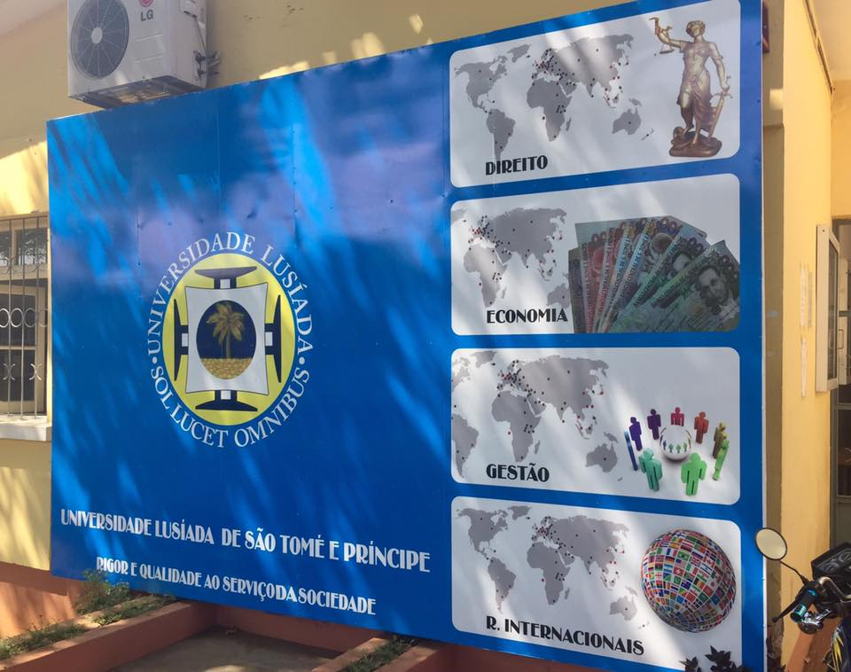

Univesidade Lusíadas
A formação nas áreas tecnológicas é essencial para o desenvolvimento do nosso país e mais especificamente das suas indústrias, sejam elas de manufactura ou de serviços. A carência de técnicos qualificados:
Devem, por isso, ser criados cursos em áreas tecnológicas em franco desenvolvimento que respondam às necessidades reais do mercado e à evolução do tecido empresarial. Nesta perspectiva os jovens licenciados terão um índice elevado de empregabilidade, sendo também previsível uma grande procura destes cursos por parte dos candidatos ao ensino superior. A licenciatura em Engenharia Informática permite a aquisição de diversificados conhecimentos que permitirão obter competências para poder compreender, projectar e orientar projectos nesta área do conhecimento. Com o conteúdo programático das diferentes unidades curriculares e as metodologias de ensino, nomeadamente a aquisição de conhecimentos com base na aprendizagem, o licenciado nesta área estará apto a ingressar no meio profissional.
Saídas profissionais
O plano de estudos da licenciatura em Engenharia Informática permite a formação de técnicos versáteis, capazes de se enquadrar num vasto leque de perfis profissionais, públicos e privados, entre os quais:
- Administradores de bases de dados;
- Analistas de sistemas;
- Auditores de informática;
- Consultores de informática; ...
- Desenvolvimento de aplicações / sistemas;
- Direcção técnica de sistemas informáticos;
- Direcção técnica de projectos informáticos;
- Ensino e investigação;
- Gestores de serviços de informática;
- Gestores de redes informáticas;
- Gestores de sistemas informáticos;
- Modelador de dados em sistemas informáticos;
- Programadores;
- Supervisores de redes informáticas;
- Técnicos de gestão de redes;
- Técnicos informáticos;
- Técnicos de manutenção de redes;
- Outras actividades profissionais onde a informática seja utilizada como instrumento de trabalho.